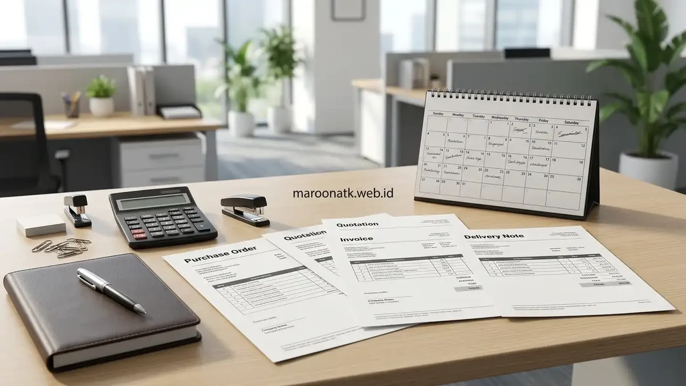

Format pengajuan pengadaan ATK adalah dokumen standar yang memuat rincian permintaan barang, jumlah, estimasi biaya, dan alasan kebutuhan, yang digunakan sebagai dasar proses persetujuan internal sebelum pemesanan dilakukan ke supplier. Penerapan SOP pengadaan yang terstruktur mampu memangkas waktu siklus persetujuan dari 14 hari kerja menjadi hanya 2–3 hari kerja.
Apa Itu Format Pengajuan Pengadaan ATK?
Format pengajuan pengadaan ATK adalah dokumen standar yang memuat rincian permintaan barang, jumlah, estimasi biaya, dan alasan kebutuhan, yang digunakan sebagai dasar proses persetujuan internal sebelum pemesanan dilakukan ke supplier.
Format ini biasanya diisi oleh divisi yang mengajukan kebutuhan, kemudian diteruskan kepada pihak yang berwenang untuk diverifikasi dan disetujui sesuai kebijakan anggaran perusahaan yang berlaku. Tanpa template formulir yang seragam, setiap staf cenderung menuliskan nama barang secara acak, seperti hanya menulis "pulpen hitam" tanpa mencantumkan merek, ketebalan mata pena (0.5mm vs 0.7mm), atau jumlah satuan per box. Hal ini sering menimbulkan salah beli barang dan memperlambat tim purchasing saat meminta penawaran harga resmi (SPH) ke vendor rekanan.
Bagaimana Alur SOP Persetujuan Pengadaan ATK B2B Berlangsung?
Alur SOP persetujuan pengadaan ATK B2B umumnya terdiri dari beberapa tahap berurutan sebelum barang benar-benar dipesan ke supplier.
| Tahap | Pihak Terkait | Output yang Dihasilkan | Batas Waktu (SLA) |
|---|---|---|---|
| 1. Pengajuan | Divisi pemohon (PIC unit kerja) | Formulir pengajuan (Purchase Requisition) terisi lengkap | Hari ke-1 (Maks. 1x24 jam) |
| 2. Verifikasi | Atasan langsung & Bagian Keuangan | Dokumen terverifikasi (Kesesuaian sisa anggaran divisi) | Hari ke-2 (Maks. 1x24 jam) |
| 3. Persetujuan Anggaran | Manajemen (General Manager / PPK) | Persetujuan resmi (Approval signature / digital sign) | Hari ke-3 (Maks. 1x24 jam) |
| 4. Pemesanan | Tim purchasing / procurement | Purchase Order (PO) resmi diterbitkan ke supplier | Hari ke-3 / 4 (Maks. 1x24 jam) |
1. Tahap Pengajuan oleh Divisi
Divisi yang membutuhkan ATK mengisi format pengajuan dengan rincian barang, jumlah, serta alasan kebutuhan, kemudian menyerahkannya kepada atasan langsung untuk tahap verifikasi awal. Pada tahap ini, pemohon wajib memastikan barang yang diajukan bukan barang non-standar yang tidak tercantum dalam katalog resmi perusahaan.
2. Tahap Verifikasi dan Persetujuan Anggaran
Setelah diverifikasi oleh atasan divisi, pengajuan diteruskan ke bagian keuangan atau manajemen untuk mendapatkan persetujuan anggaran, sebelum akhirnya diteruskan ke tim purchasing untuk proses pemesanan ke supplier. Tim keuangan akan memvalidasi apakah pengeluaran tersebut masih berada di bawah pagu anggaran belanja operasional (OpEx) bulanan divisi yang bersangkutan.

Negosiasi SLA Kontrak Paket Pengadaan ATK
Pelajari 6 klausul wajib Service Level Agreement untuk mengunci lead time vendor.
Mengapa Proses Persetujuan Sering Berbelit-belit dan Lambat?
Proses persetujuan sering lambat karena dokumen pengajuan tidak lengkap sejak awal, sehingga harus bolak-balik direvisi sebelum dapat diverifikasi lebih lanjut oleh pihak yang berwenang.
Selain itu, alur persetujuan yang melibatkan banyak pihak tanpa batas waktu yang jelas pada setiap tahap juga sering menjadi penyebab proses berlarut-larut, terutama jika tidak ada sistem pelacakan status pengajuan yang transparan. Kendala klasik yang sering ditemui di lapangan antara lain:
- Berkas fisik terselip di tumpukan meja: Dokumen cetak sering tertahan berhari-hari di meja atasan yang sedang bertugas dinas luar kota.
- Ketidakjelasan batas kewenangan (Limit of Authority): Staf bingung apakah pengajuan di bawah Rp5 juta membutuhkan tanda tangan Direktur atau cukup Kepala Divisi.
- Revisi berulang karena salah spesifikasi: Bagian purchasing menolak berkas karena spesifikasi toner printer atau gramatur kertas yang diminta tidak jelas.

Bagaimana Mempercepat Alur Persetujuan Pengadaan ATK?
Alur persetujuan dapat dipercepat dengan menggunakan format pengajuan yang terstandarisasi dan lengkap sejak awal, sehingga meminimalkan revisi bolak-balik antar pihak yang terlibat.
Selain itu, menetapkan batas waktu maksimal pada setiap tahap persetujuan dan menggunakan sistem pelacakan status pengajuan, meski sederhana seperti Google Sheets bersama atau aplikasi ERP, dapat membantu memantau progres serta mendorong setiap pihak menyelesaikan tahapnya tepat waktu. Langkah konkret untuk mempercepat alur meliputi:
- Terapkan Limit of Authority (LoA) Bertingkat: Pengajuan di bawah Rp2.000.000 cukup disetujui Manajer Divisi, pengajuan Rp2.000.000 – Rp10.000.000 ke Manajer Keuangan, dan hanya pengajuan di atas Rp10.000.000 yang memerlukan tanda tangan Direksi.
- Beralih ke Formulir Digital & E-Signature: Mengganti lembaran formulir manual dengan sistem persetujuan digital memungkinkan atasan memberikan approval kapan saja via smartphone.
- Gunakan Rekanan Vendor Kontrak Payung: Bermitra dengan vendor tetap seperti MAROON ATK menghilangkan keharusan mencari 3 penawaran harga pembanding setiap kali ingin memesan pulpen atau kertas, karena harga satuan sudah dikunci dalam kontrak jangka panjang.
Apa Saja Dokumen yang Perlu Disiapkan dalam Format Pengajuan ATK?
Dokumen yang umumnya diperlukan dalam format pengajuan ATK meliputi daftar rincian barang yang dibutuhkan, estimasi biaya, alasan kebutuhan, serta persetujuan awal dari atasan divisi yang mengajukan permintaan.
Kelengkapan dokumen sejak awal pengajuan membantu mempercepat proses verifikasi, karena pihak yang memeriksa tidak perlu meminta klarifikasi tambahan yang dapat memperlambat alur persetujuan secara keseluruhan. Komponen penting yang wajib ada dalam formulir:
| Komponen Dokumen | Uraian Kolom Pengisian | Fungsi bagi Tim Verifikator |
|---|---|---|
| Nomor & Tanggal Requisition | Nomor registrasi unik berurutan dan tanggal submit formulir | Pelacakan riwayat dokumen dalam sistem arsip audit internal |
| Identitas Divisi & Cost Center | Nama divisi pemohon, penanggung jawab, dan kode alokasi anggaran | Memastikan pembebanan pos anggaran ke divisi yang tepat |
| Daftar SKU & Spesifikasi Lengkap | Nama barang, merek resmi, ukuran/gramatur, dan jumlah unit | Mencegah salah pesan barang oleh tim purchasing |
| Estimasi Biaya & Referensi Harga | Perkiraan harga satuan dan total anggaran yang diajukan | Bahan evaluasi kelayakan anggaran oleh tim finance |
| Justifikasi / Alasan Kebutuhan | Penjelasan urgensi pemakaian barang (rutin atau project baru) | Mencegah pemborosan barang di luar kebutuhan operasional riil |
Untuk mengetahui cara menghitung volume barang secara akurat sebelum mengisi formulir ini, Anda dapat membaca panduan menyusun paket pengadaan ATK sesuai jumlah staf. Kunjungi juga katalog lengkap paket pengadaan kantor MAROON ATK atau pelajari kredibilitas kami di halaman tentang kami.
Kesimpulan
- Standardisasi sejak awal: Gunakan format pengajuan ATK yang terstandarisasi dan lengkap sejak awal untuk mengeliminasi revisi.
- Pahami 4 tahap SOP: Pahami alur SOP mulai dari pengajuan, verifikasi, persetujuan anggaran, hingga pemesanan resmi.
- Tetapkan batas waktu: Tetapkan batas waktu maksimal (SLA 24 jam) pada setiap tahap untuk menghindari proses berlarut-larut.
- Gunakan tracking transparan: Terapkan sistem pelacakan status pengajuan agar progres persetujuan dapat dipantau bersama.
- Konsultasikan ke vendor tepercaya: Hubungi tim MAROON ATK setelah pengajuan disetujui untuk pemenuhan barang cepat berdokumen legal lengkap.
Pertanyaan yang Sering Diajukan (FAQ)
Format pengajuan pengadaan ATK adalah dokumen standar yang memuat rincian permintaan barang, jumlah, estimasi biaya, dan alasan kebutuhan, yang digunakan sebagai dasar proses persetujuan internal.
Alur umumnya dimulai dari pengajuan oleh divisi terkait, verifikasi oleh atasan atau bagian keuangan, persetujuan anggaran, hingga proses pemesanan ke supplier setelah disetujui.
Proses sering lambat karena dokumen pengajuan tidak lengkap sejak awal, alur persetujuan melibatkan banyak pihak tanpa batas waktu yang jelas, atau tidak ada sistem pelacakan status pengajuan.
Gunakan format pengajuan yang terstandarisasi dan lengkap sejak awal, tetapkan batas waktu maksimal pada setiap tahap persetujuan, serta gunakan sistem pelacakan status pengajuan jika memungkinkan.
Dokumen yang umumnya diperlukan meliputi daftar rincian barang, estimasi biaya, alasan kebutuhan, serta persetujuan awal dari atasan divisi yang mengajukan.

Ridhan Fahri
Praktisi pengadaan B2B dan manajemen inventaris kantor yang berfokus pada efisiensi anggaran operasional, standarisasi rantai pasok ATK, serta otomasi kalkulasi logistik kebutuhan fasilitas korporat.